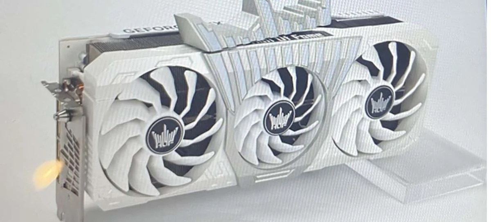

GeForce RTX 4090 HOF da Galax bate 20 recordes mundiais
Submetida a diversos testes, a placa se mostrou ser a mais avançada até agora,Com o lançamento recente da GeForce RTX 4090, GPU de alta performance da Nvidia, diversos testes tem sido realizados para adquirir o máximo que a GPU tem a oferecer. Com isso, a placa de vídeo GeForce RTX 4090 HOF da GALAX é um modelo equipado com conector de alimentação duplo de 16 pinos, sendo a única até agora desse tipo no mercado. Esse modelo foi feito especificamente com um propósito, ser usado para quebrar recordes mundiais por quem faz overclock.
Ler mais

Regiões metropolitanas poderão antecipar 5G para janeiro
Para compartilhar esse conteúdo, por favor utilize o link https://www1.folha.uol.com.br/mercado/2022/11/regioes-metropolitanas-poderao-antecipar-5g-para-janeiro.shtml ou as ferramentas oferecidas na página. Textos, fotos, artes e vídeos da Folha estão protegidos pela legislação brasileira sobre direito autoral. Não reproduza o conteúdo do jornal em qualquer meio de comunicação, eletrônico ou impresso, sem autorização da Folhapress (pesquisa@folhapress.com.br). As regras têm como objetivo proteger o investimento que a Folha faz na qualidade de seu jornalismo. Se precisa copiar trecho de texto da Folha para uso privado, por favor logue-se como assinante ou cadastrado.
Ler mais

Tecnologia da Intel promete detectar deepfakes com 96% de precisão
Tecnologia FakeCatcher, da Intel, usa inteligência artificial para analisar sinais de fluxo sanguíneo do rosto e detectar deepfakes. Deepfake é um nome popular para as tecnologias que usam inteligência artificial com o intuito de recriar expressões faciais de pessoas em vídeos. Infelizmente, ferramentas do tipo vêm sendo usadas para espalhar desinformação ou causar constrangimento.
Ler mais